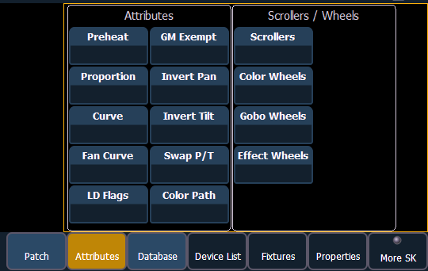

The {Attributes} page provides you with optional fields for additional information and details about the configuration of your rig. Attribute settings include {Preheat}, {Proportion}, {Curve}, {Fan Curve}, {LD Flags}, {GM Exempt}, {Invert Pan}, {Invert Tilt}, {Swap P/T}, and {Color Path}.
When the selected device includes a color scroller, a {Scroller} button will be displayed in the CIA, when the selected device includes a color wheel, a gobo wheel, and/or effect wheel, {Color Wheel}, {Gobo Wheel}, and/or {Effect Wheel} buttons will appear.
Press the desired attribute button and use the keypad to set the attribute value.

From channel view:
From address view:
Note: When {Curve} or {Fan Curve} is pressed, a list of the available curves will be displayed. Clicking on an available curve will assign it.